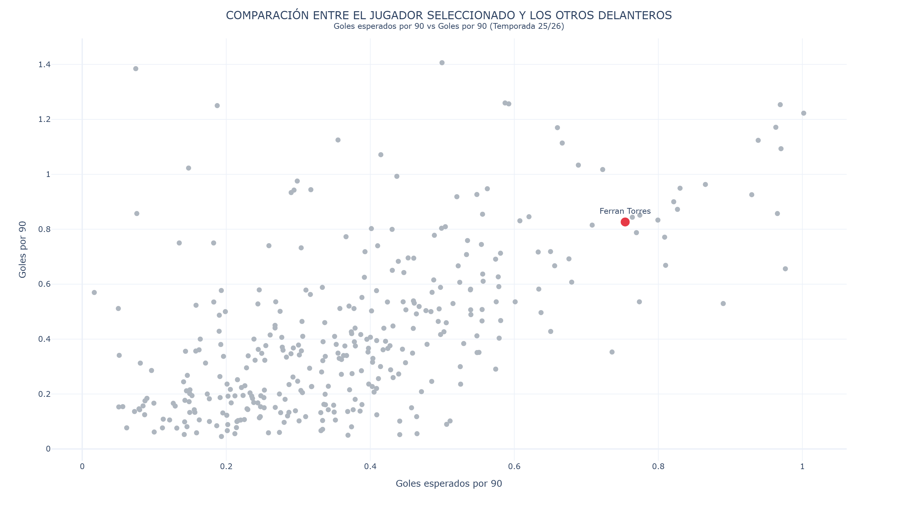
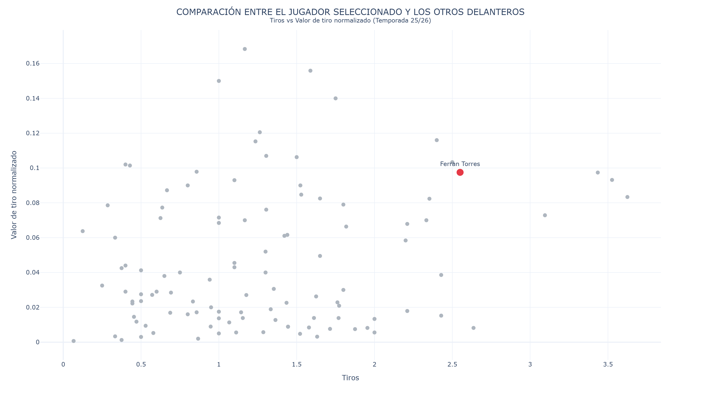
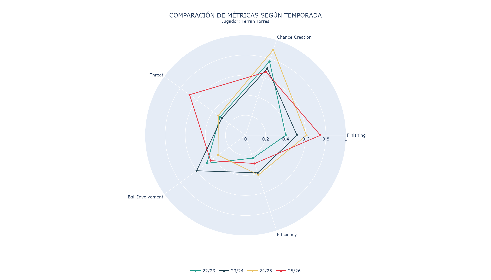

Jugador: Ferran Torres
Liga: La Liga (25/26)
Equipo: Barcelona
Posición: Delantero
Número: 7
Altura: 185 cm
País: Spain
Valor de mercado: 54.0 (millones) €
Edad: 25 (29/02/2000)
Goles por 90: 16.53
xG por 90: 15.08
Goles sobre xG: 14.67
Tiros por 90: 64.16
Big chances creadas por 90: 9.55
Valor de tiro: 0.1
Tiros a puerta: 26
Valor ofensivo por 90: 8.51
Toques por 90: 692.61
Pérdidas por 90: 17.0


